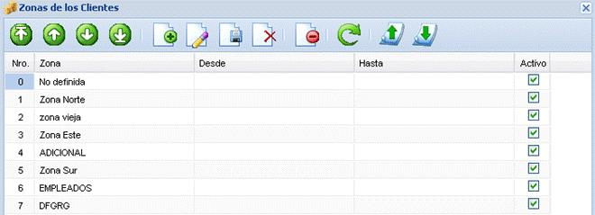

Para administrar las zonas de los equipos conectados al servidor se debe dirigir al menú sistema y seleccionar la opción zonas y se desplegará una ventana en la cual se mostrarán las zonas que han sido creadas. Para crear una nueva zona se presiona agregar y se digitarán los datos correspondientes a dicho registro.
